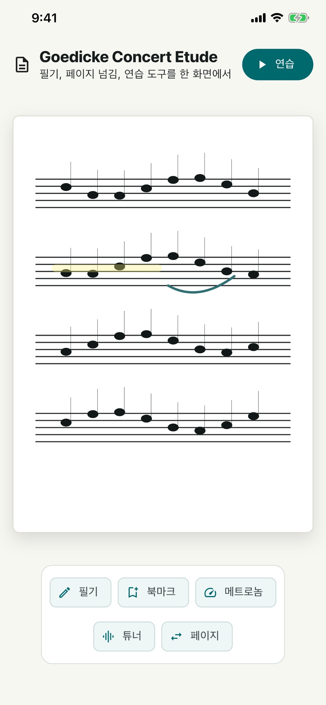
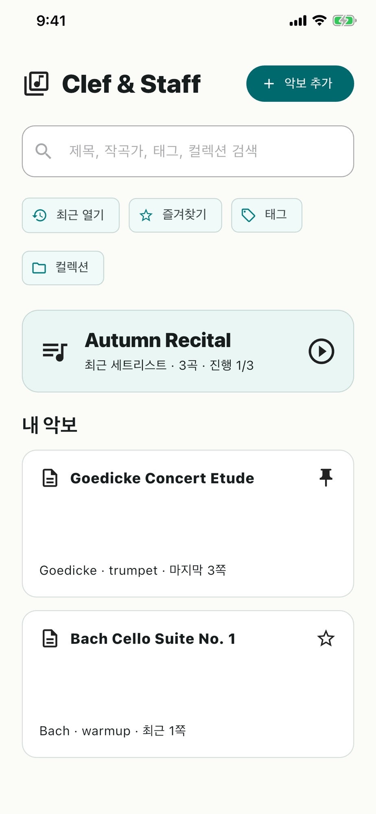
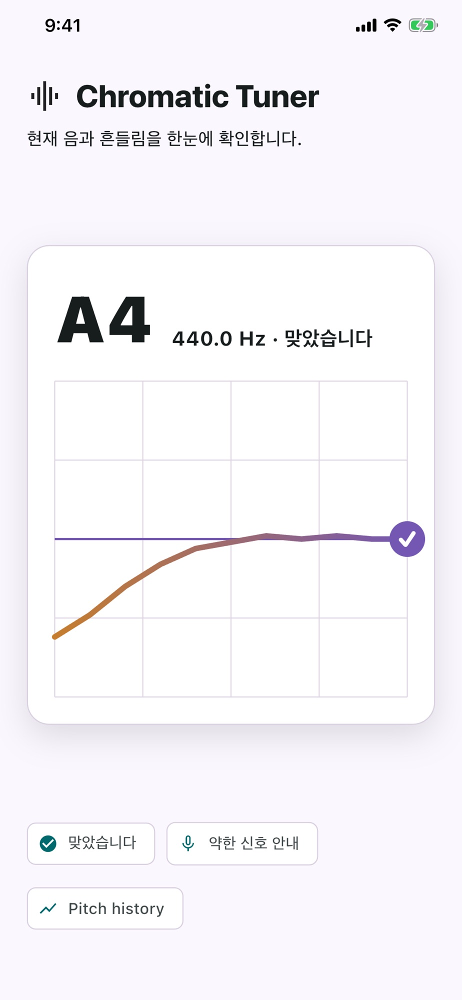

내 악보를 가져와요.
기기의 PDF·JPG·PNG 악보를 가져와 읽어요. 앱에서 악보를 구매하거나 구독하지 않아도 됩니다.
PDF 악보 · 필기 · 연습 도구
내 PDF 악보에 필요한 표시를 남기고,
튜너와 메트로놈을 꺼내 연습하세요.
iPhone · iPad
현재 App Store 이름은 Clef & Staff입니다.
같은 앱이 띠로리 스코어로 이름을 바꿀 예정이에요.

악보와 연습 도구를 한곳에서
직접 준비한 악보를 열고
필요한 도구를 골라 쓰세요.
기기의 PDF·JPG·PNG 악보를 가져와 읽어요. 앱에서 악보를 구매하거나 구독하지 않아도 됩니다.
펜과 형광펜, 텍스트로 필요한 표시를 남겨요. 필기가 담긴 PDF 사본을 공유할 수도 있어요.
튜너로 음정을 확인하고 메트로놈으로 속도를 맞춰요. 기준음을 들으며 연습을 준비할 수도 있어요.
연주할 곡을 준비하는 방법
제목·작곡가·태그로 악보를 정리하고, 세트리스트로 오늘 연습할 순서를 묶어보세요.
악보와 필기, 세트리스트는 기본적으로 기기에 보관됩니다. 중요한 자료는 별도로 백업해 주세요.

한국어 안내와 익숙한 연습 도구
악보 읽기와 필기부터 튜너·메트로놈까지. 필요한 도구를 한 앱에서 찾아보세요.
튜너로 음정을 감지할 때는 마이크 권한이 필요합니다.

시작하기 전에
띠로리 스코어의 이전 이름입니다. 현재 공개 버전은 Clef & Staff라는 이름으로 제공하며, 새 이름과 브랜딩을 적용한 업데이트를 준비하고 있어요. 이 페이지의 설치 버튼은 같은 앱으로 연결됩니다.
직접 준비한 PDF나 이미지 악보를 가져와 쓰는 앱입니다. 악보 판매·구독 서비스나 음표를 입력하는 사보 편집기는 아닙니다.
현재 공개된 iPhone·iPad 앱은 App Store에서 무료로 받을 수 있습니다. 직접 준비한 악보를 가져와 사용해 보세요.
악보와 필기는 기본적으로 기기에 보관됩니다. 자동 동기화로 가정하지 말고, 기기를 바꾸기 전에 앱의 백업·내보내기 기능으로 중요한 자료를 보관해 주세요.
오늘 연습할 악보가 있나요?
iPhone·iPad에서 무료로 받아
내 악보를 펼쳐보세요.
스토어에는 이전 이름 Clef & Staff로 표시됩니다.
사용 중 도움이 필요하신가요? ↗